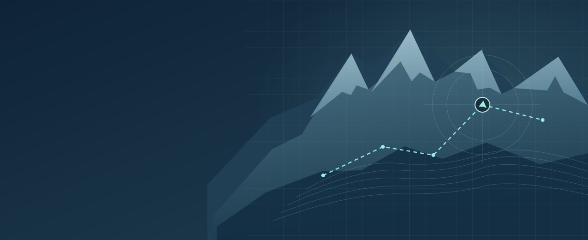

注意与知觉实验室
视觉搜索 · 比例估计 · 地图定向
实验项目
参与流程
- 01同意与编号
- 02阅读与练习
- 03完成判断
- 04查看结果
正式实验建议使用电脑与键盘。摄像头眼动需要单独同意，可随时跳过。
概念演示
数据结果
校准眼动
正在初始化摄像头。
作答时保持页面在前台。练习有反馈，正式阶段只记录作答。

视觉搜索 · 比例估计 · 地图定向
正式实验建议使用电脑与键盘。摄像头眼动需要单独同意，可随时跳过。
正在初始化摄像头。
作答时保持页面在前台。练习有反馈，正式阶段只记录作答。